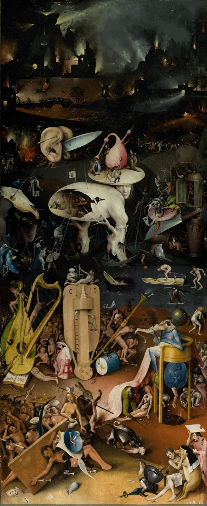

naraka
the hell realm
"All hope abandon, ye who enter in!" — the gate of Dante's Inferno, canto III (trans. Longfellow)

the shape of the trap
The aggression of the hell realm does not seem to be your aggression, but it seems to permeate the whole space around you. There is a feeling of extreme stuffiness and claustrophobia. There is no space in which to breathe, no space in which to act, and life becomes overwhelming.
— Chögyam Trungpa, The Myth of Freedom
… the hell realm concerned with righteousness, anger originating from a sense of victimization, and impatience with the unpredictable nature of the world …
— Martin Lowenthal & Lar Short, Opening the Heart of Compassion
When you're angry, you see the world in terms of opposition.
— Ken McLeod, Awakening from Belief
As the actions which drove them there were motivated by hatred, the effect similar to the cause makes them see each other as mortal enemies, and furiously they fight… At that time, a voice from the sky says, "Revive!" and they immediately come back to life and start fighting all over again.
— Patrul Rinpoche, The Words of My Perfect Teacher, on the Reviving Hell
texture
poem
Paradise Lost — John Milton
The mind is its own place, and in it self Can make a Heav'n of Hell, a Hell of Heav'n.
— Book I, lines 254–255
play
No Exit — Jean-Paul Sartre
There's no need for red-hot pokers. Hell is — other people!
— Garcin
film
Come and See — dir. Elem Klimov, 1985
One of the most devastating films ever about anything.
— Roger Ebert
song
You Want It Darker — Leonard Cohen, 2016
dispatches
Via the community archive.
Hell realm is made of the belief that it's possible to be trapped in suffering.
The core of hell realm is the feeling that your suffering doesn't matter. People object in that your suffering matters to you and that's not nothing, but it feels like it when accompanied by worthlessness. It forms a tight snarl.
In the hell realm, this is interpreted as "your suffering is your own fault bc you don't know how to behave correctly." The ownership forms a sealing layer on the suffering. This too needs compassion. It was not chosen but conditioned.
What is wholesome about the hell realm? Hell realm beings are outraged at people's denial of the first noble truth: that suffering is real, and it matters.
In the Buddhist tradition, the most tragic aspect of the hell realm is that the gates are not locked. People are literally memed into staying.
In one sutta, a Bodhisattva visits a hell realm. Demons begin attempting to torment him with various things, but he continues calmly teaching dharma to anyone who will listen. A higher ranking demon overhears and goes "get him the fuck out of here, he's going to ruin everything."
the impression that anything you could do would just make things worse is what forms the walls of Naraka
Every time my brain chemistry goes bonkers, it reminds me how much grace to extend to other people,,
Cuz everyone's body is a unique drug cocktail, and states that are wild swings into hell realms for me — are probably fairly close to some people's baselines.
i use "hell realm" loosely to refer to a state in which
- you are suffering enormously - the suffering is sticky or persistent, refuses to dissipate, regenerates, feels correct, justified, necessary
[…] antidotes to hell realms are the sappiest shit imaginable: gratitude. love. the brahmaviharas: metta (loving-kindness), karuna (compassion), mudita (empathetic joy), upekkha (equanimity). patience. forgiveness. mercy. grace. the light of heaven. the care bear stare. friendship. laughter. joy. beauty. mourning. prayer. […]
choosing the antidotes to a hell realm from inside the hell realm is not easy (if it were easy they wouldn't be hell realms). the hell realm will try to convince you that the antidotes are poison […]
the door
Hatred is never appeased by hatred in this world. By non-hatred alone is hatred appeased. This is a law eternal.
— Dhammapada, verse 5 (trans. Buddharakkhita)
All the good works gathered in a thousand ages, Such as deeds of generosity, And offerings to the Blissful Ones— A single flash of anger shatters them.
— Shantideva, The Way of the Bodhisattva, 6.1 (Padmakara trans.)
Those who will not slip beneath the still surface on the well of grief …
— David Whyte, The Well of Grief
A bodhisattva entering hell must first fold themselves in particular ways to be visible or legible to the beings there. They must adopt the same contracted form as the hell realm beings. But then they unfold, providing an existence proof that unfolding from the hell-shape is possible. […]
Pain contracts consciousness, making it like looking through a tiny tube. […] This is why beings helping those in hell must fold themselves very small. It's also where mantras originate - when you're so contracted that you can't remember the full shapes of compassion or gratitude, sometimes all you can hold onto is the pointer.
The wisdom and clarity of righteous anger resides in the hell realm along with the first noble truth that suffering is real and matters
gratitude may seem small but it is one of your best protections against hell realms
don't forget you can leave anytime
or if you do forget, as is often necessary to visit naraka, then I hope you remember soon
even here, a buddha
In hell he is called Dharmaraja, and he bears flame and water — warmth for the frozen hells, cooling rain for the burning ones.
The gates are not locked.
☸ the six realms · may all beings be free